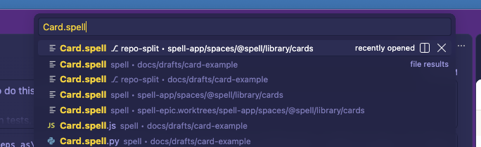

Owen's test run, 2026-10-22 20:42: V2 failed.
Owen: Still seeing `repo-split` and `spell-app` files duplicated when I open a window

From V2's comment: "Still seeing repo-split and spell-app files duplicated when I open a
window".
-
The cause is the window's file hiding, which is epic-engine's tooling:
-
The window hides the main checkout's files with a rule that's on only next to its
.spell-main marker.
-
The Explorer obeys that rule. Quick Open (⌘P) doesn't, so every file shows twice: once under
⎇ repo-split, once under spell.
- A third copy shows from a stray folder in the main checkout,
~/www/spell/spell-epic.worktrees.
- I'm sending both to epic-engine with the rest of your feedback from this testing pass.
- To find a file now: in ⌘P, pick the line that says
⎇ repo-split.
- Goes to epic-engine at the end of this pass. V2's language-server check stays open for your next run.